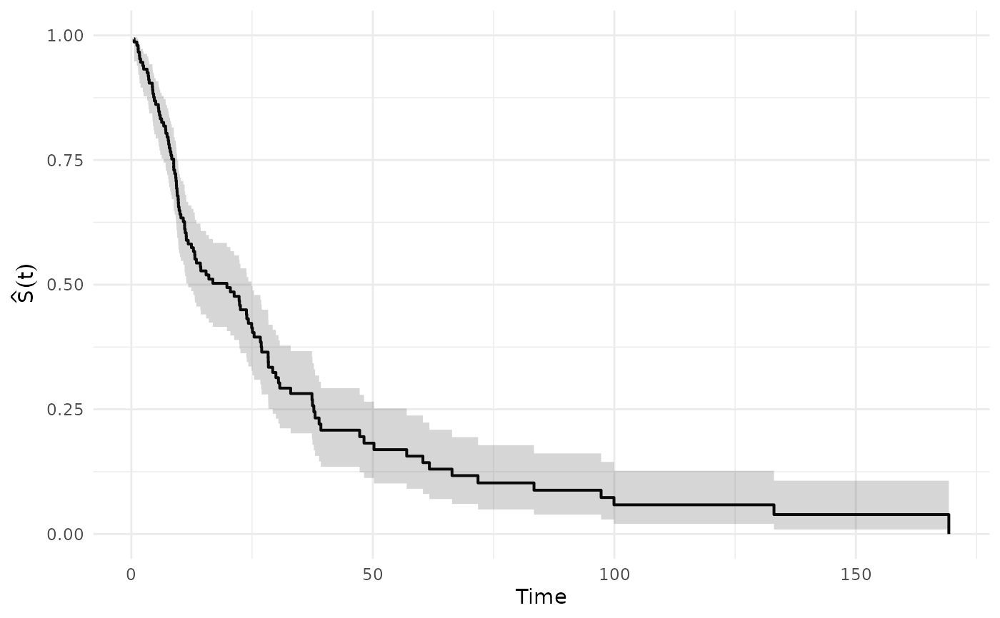
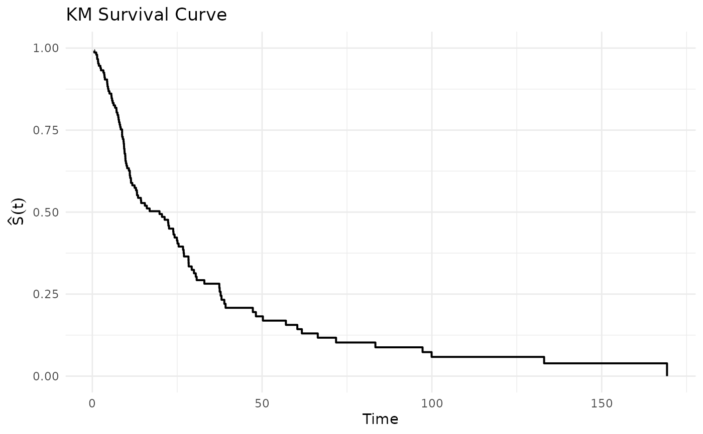
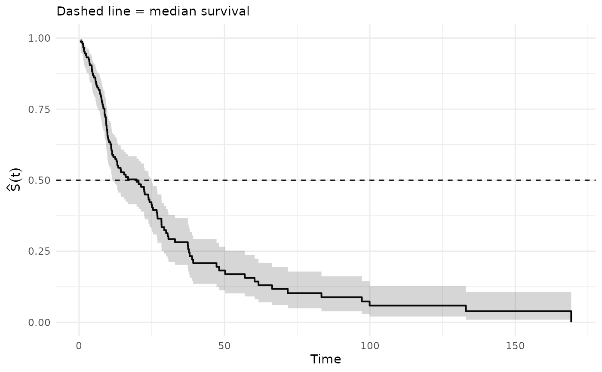

Creates a step-function plot of the Kaplan–Meier survival estimate
\(\hat S(t)\) with optional pointwise confidence bands. Designed to
work directly with the output of km_lifetable.
Usage
plot_km(
km,
time_col = "time",
surv_col = "S",
lower_col = "ci_low",
upper_col = "ci_high",
conf_int = TRUE,
title = NULL
)Arguments
- km
A data frame or tibble with at least columns for time and survival. Can also be the full list returned by
km_lifetable, in which case the$kmcomponent is extracted automatically.- time_col
Character. Name of the time column. Default
"time".- surv_col
Character. Name of the survival column. Default
"S"(matchingkm_lifetableoutput).- lower_col
Character. Name of the lower CI column. Default
"ci_low"(matchingkm_lifetableoutput).- upper_col
Character. Name of the upper CI column. Default
"ci_high"(matchingkm_lifetableoutput).- conf_int
Logical. If
TRUE(default) and CI columns exist inkm, plot a step-wise confidence ribbon.- title
Optional character string for the plot title.
Details
Both the survival curve and the confidence band are rendered as step
functions (using geom_step), which is the correct
representation for the KM estimator - a right-continuous step function
that drops at each observed event time.
The confidence band uses geom_stepribbon logic: the data is
internally expanded so that a ribbon-fill follows the step pattern rather
than interpolating linearly between event times.
See also
km_lifetable for fitting the KM estimator and
building the empirical life table.
Examples
set.seed(42)
n <- 150
time <- rexp(n, rate = 0.05)
status <- rbinom(n, 1, prob = 0.7)
# Fit KM and plot directly
out <- km_lifetable(time, status, breaks = 0:30)
# Pass the full list - $km is extracted automatically
plot_km(out)
#> Warning: Removed 1 row containing missing values or values outside the scale range
#> (`geom_ribbon()`).

# Or pass just the km tibble
plot_km(out$km)
#> Warning: Removed 1 row containing missing values or values outside the scale range
#> (`geom_ribbon()`).
 # Without confidence band
plot_km(out, conf_int = FALSE, title = "KM Survival Curve")
# Without confidence band
plot_km(out, conf_int = FALSE, title = "KM Survival Curve")

# Customise with ggplot2 layers
if (requireNamespace("ggplot2", quietly = TRUE)) {
plot_km(out) +
ggplot2::geom_hline(yintercept = 0.5, linetype = "dashed") +
ggplot2::labs(subtitle = "Dashed line = median survival")
}
#> Warning: Removed 1 row containing missing values or values outside the scale range
#> (`geom_ribbon()`).
